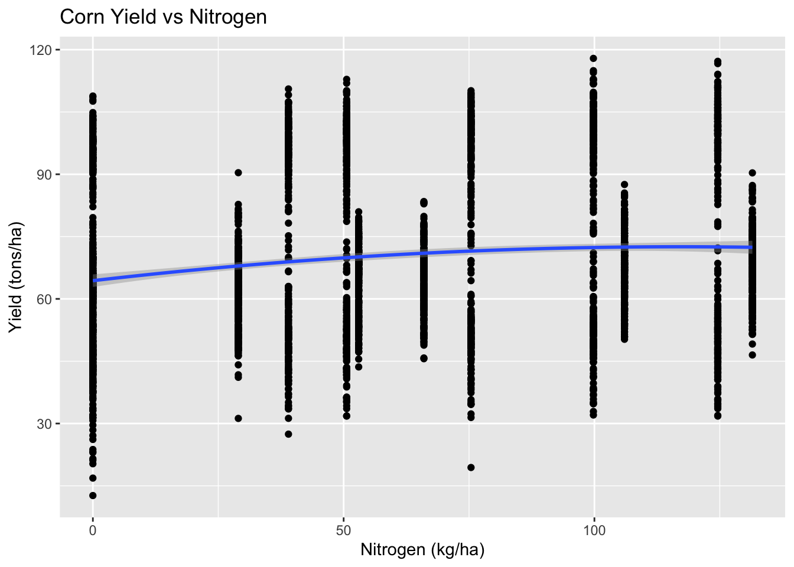
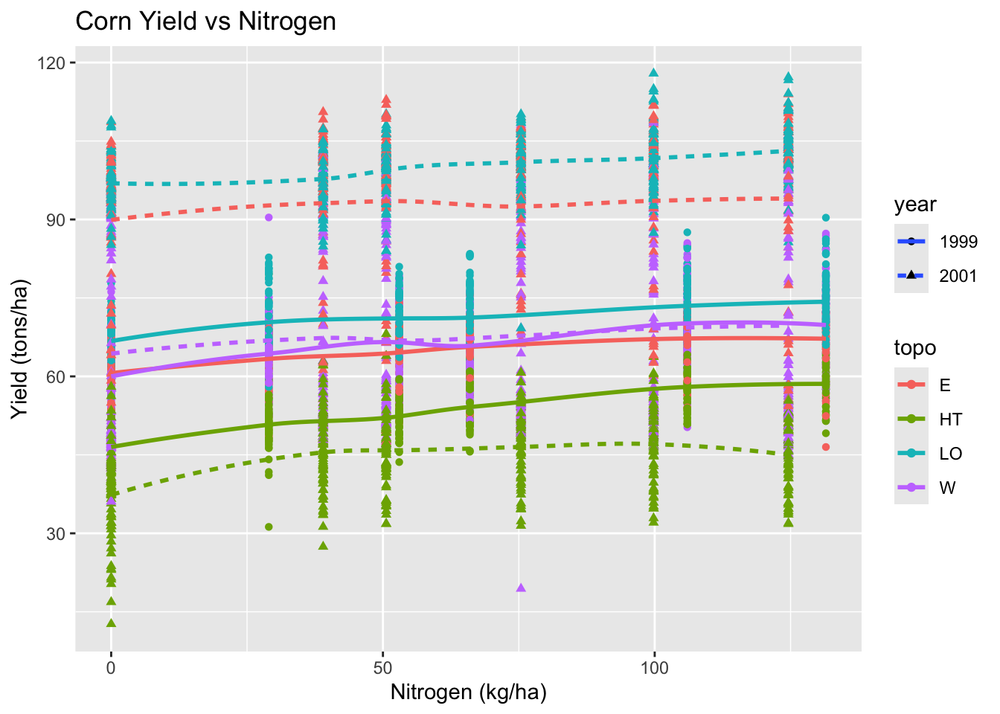
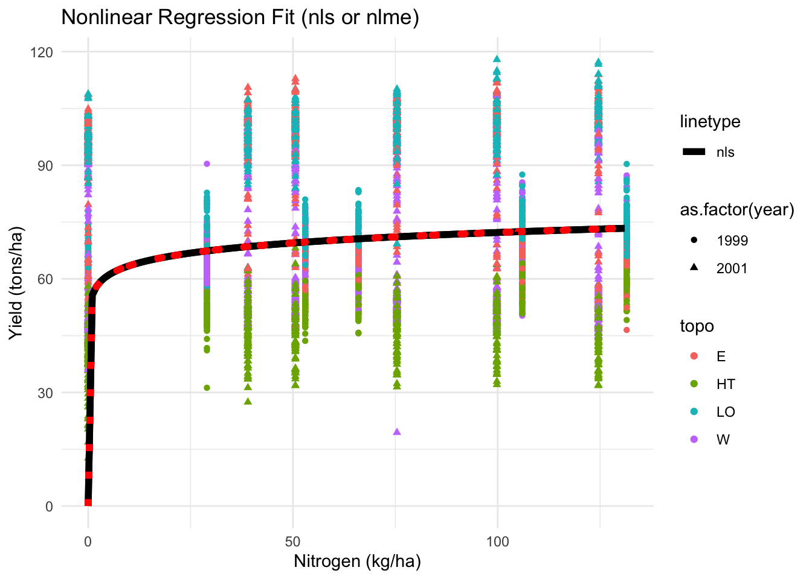
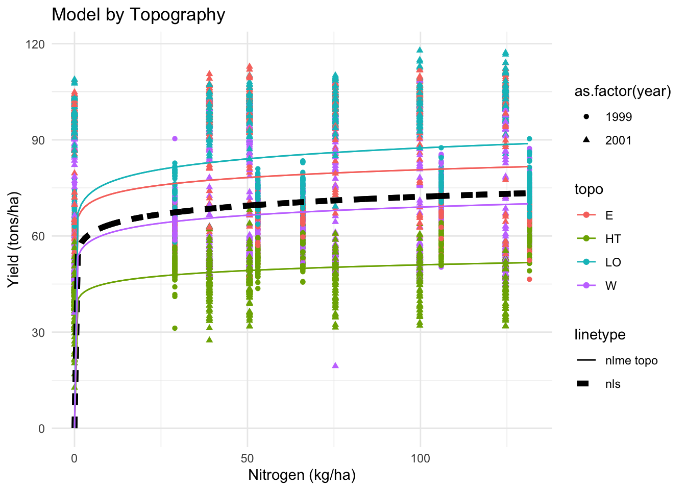
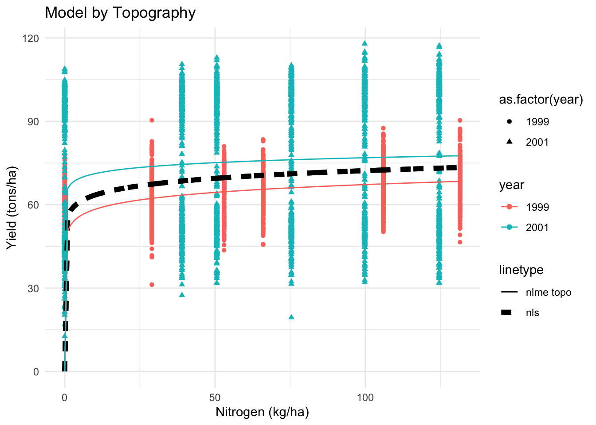
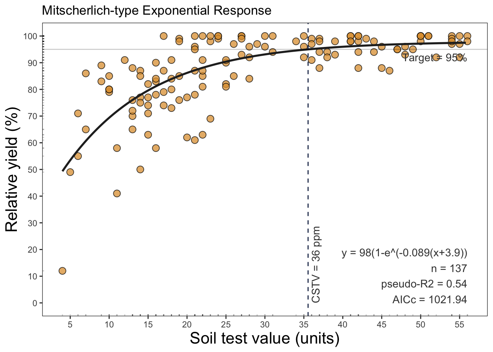
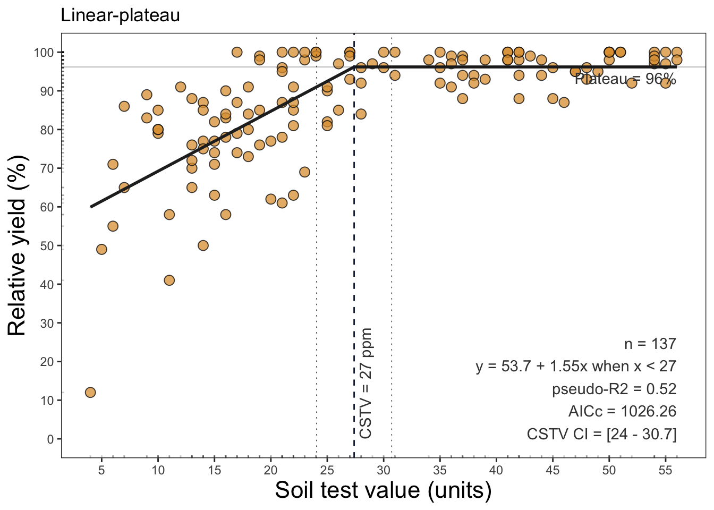
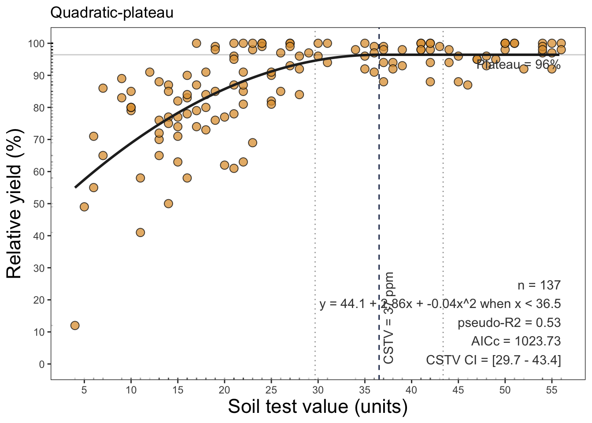
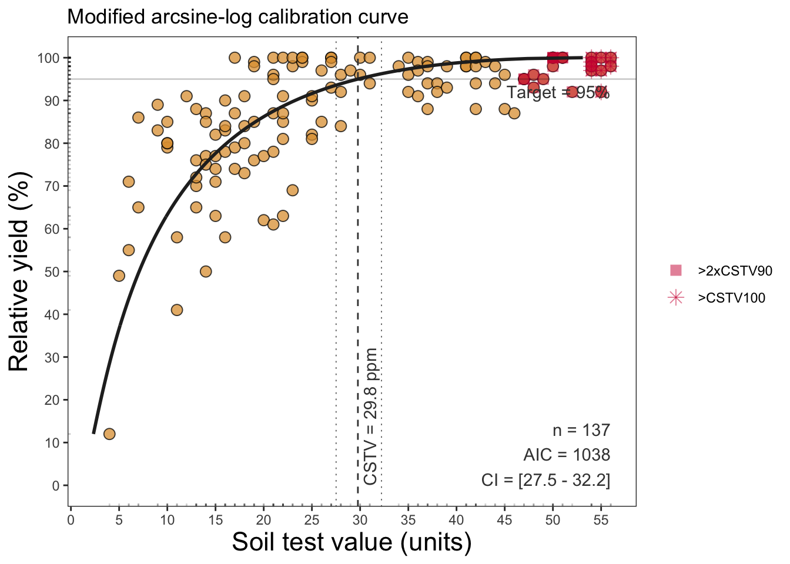

# Load necessary libraries
library(pacman)
p_load(dplyr, tidyr) # data wrangling
p_load(ggplot2) #plots
p_load(agridat) # dataset
p_load(nls, nlme) # non-linear models
p_load(minpack.lm) # convergence help for nl models
p_load(AICcmodavg) # corrected AIC performance
p_load(soiltestcorr) # nl models for soil fertilityNon-Linear Regression with R
nonlinear models
R
statistics
agriculture
Summary
This tutorial provides an overview of non-linear regression models in R using agricultural data. We will explore different non-linear models, their applications, and how to implement them with both nls() and nlme() functions.
1 Introduction
Non-linear regression is a statistical technique used to model relationships that cannot be well-represented by a straight line. Unlike linear regression, which assumes a constant rate of change, non-linear models accommodate curves and complex relationships in data.
This tutorial will:
- Introduce the concept of non-linear regression.
- Show how to fit non-linear models in R using
nls()andnlme(). - Try the minpack.lm package for starting values.
- Conduct model selection using AIC and AICc.
- Apply these concepts to the
agridat::lasrosas.corndataset. - See an example of specific package to help with non-linear regression
1.1 Why Non-Linear Regression?
Many real-world relationships are inherently non-linear. Examples include:
- Growth models (e.g., exponential or power functions).
- Yield response to fertilizers.
- Enzyme kinetics in biological systems.
Required packages for today
2 Data
# Load dataset
data_corn <- agridat::lasrosas.corn %>%
mutate(topo = as.factor(topo),
year = as.factor(year))
# Inspect data
head(data_corn) year lat long yield nitro topo bv rep nf
1 1999 -33.05113 -63.84886 72.14 131.5 W 162.60 R1 N5
2 1999 -33.05115 -63.84879 73.79 131.5 W 170.49 R1 N5
3 1999 -33.05116 -63.84872 77.25 131.5 W 168.39 R1 N5
4 1999 -33.05117 -63.84865 76.35 131.5 W 176.68 R1 N5
5 1999 -33.05118 -63.84858 75.55 131.5 W 171.46 R1 N5
6 1999 -33.05120 -63.84851 70.24 131.5 W 170.56 R1 N5summary(data_corn) year lat long yield
1999:1738 Min. :-33.05 Min. :-63.85 Min. : 12.66
2001:1705 1st Qu.:-33.05 1st Qu.:-63.85 1st Qu.: 54.54
Median :-33.05 Median :-63.85 Median : 66.63
Mean :-33.05 Mean :-63.85 Mean : 69.83
3rd Qu.:-33.05 3rd Qu.:-63.84 3rd Qu.: 84.69
Max. :-33.05 Max. :-63.84 Max. :117.90
nitro topo bv rep nf
Min. : 0.00 E : 730 Min. : 91.74 R1:1147 N0:573
1st Qu.: 29.00 HT: 785 1st Qu.:168.48 R2:1147 N1:577
Median : 66.00 LO: 885 Median :173.08 R3:1149 N2:571
Mean : 64.57 W :1043 Mean :174.42 N3:575
3rd Qu.:106.00 3rd Qu.:179.39 N4:572
Max. :131.50 Max. :213.82 N5:575 2.1 Visualizing the Data
To determine if a non-linear model is needed, we first visualize the data:
# Global scatter plot
ggplot(data_corn, aes(x = nitro, y = yield)) +
geom_point() +
geom_smooth()+
labs(title = "Corn Yield vs Nitrogen", x = "Nitrogen (kg/ha)", y = "Yield (tons/ha)")
# Grouped scatter plot
ggplot(data_corn, aes(x = nitro, y = yield)) +
geom_point(aes(color = topo, shape = year)) +
geom_smooth(aes(color = topo, linetype = year), se=F)+
labs(title = "Corn Yield vs Nitrogen", x = "Nitrogen (kg/ha)", y = "Yield (tons/ha)")
3 Fitting a Non-Linear Model using nls()
We fit an Exponential Growth Model:
\[Y = a X^b\]
where:
- \((Y)\) is the yield.
- \((X)\) is the nitrogen applied.
- \(a\) and \(b\) are parameters to estimate.
# Fit the model with nls
nls_model <- nls(yield ~ a * nitro^b, data = data_corn,
start = list(a = 50, b = 0.05))
# Summary of the model
summary(nls_model)
Formula: yield ~ a * nitro^b
Parameters:
Estimate Std. Error t value Pr(>|t|)
a 55.71691 4.33102 12.865 < 2e-16 ***
b 0.05641 0.01811 3.116 0.00185 **
---
Signif. codes: 0 '***' 0.001 '**' 0.01 '*' 0.05 '.' 0.1 ' ' 1
Residual standard error: 32.99 on 3441 degrees of freedom
Number of iterations to convergence: 3
Achieved convergence tolerance: 1.209e-074 Fitting a Non-Linear Mixed Model using nlme()
The idea here is to be able to account for variability among replicates (rep), so we extend our model to:
# Fit the model with nlme
nlme_model <- nlme(yield ~ a * nitro^b,
data = data_corn,
fixed = a + b ~ 1,
random = a ~ 1 | rep,
start = c(a = coef(nls_model)[[1]], b = coef(nls_model)[[2]]) )
# Summary of the model
summary(nlme_model)Nonlinear mixed-effects model fit by maximum likelihood
Model: yield ~ a * nitro^b
Data: data_corn
AIC BIC logLik
33852.62 33877.19 -16922.31
Random effects:
Formula: a ~ 1 | rep
a Residual
StdDev: 0.001414344 32.98493
Fixed effects: a + b ~ 1
Value Std.Error DF t-value p-value
a 55.71691 4.331020 3439 12.86461 0.0000
b 0.05641 0.018106 3439 3.11551 0.0019
Correlation:
a
b -0.994
Standardized Within-Group Residuals:
Min Q1 Med Q3 Max
-1.567168803 -0.383887822 0.003849285 0.919014405 3.299688776
Number of Observations: 3443
Number of Groups: 3 AIC(nls_model)[1] 33850.62AIC(nlme_model)[1] 33852.624.1 only topo
nlme_model_topo <- nlme(yield ~ a * nitro^b,
data = data_corn,
fixed = a + b ~ topo,
random = a + b ~ 1 | rep,
start = c(a_Intercept = 1, b_Intercept = 0.5,
a_HT = 0, a_LO = 0, a_W = 0,
b_HT = 0, b_LO = 0, b_W = 0))
summary(nlme_model_topo)Nonlinear mixed-effects model fit by maximum likelihood
Model: yield ~ a * nitro^b
Data: data_corn
AIC BIC logLik
33377.94 33451.67 -16676.97
Random effects:
Formula: list(a ~ 1, b ~ 1)
Level: rep
Structure: General positive-definite, Log-Cholesky parametrization
StdDev Corr
a.(Intercept) 4.358860e-01 a.(In)
b.(Intercept) 5.329321e-09 0.475
Residual 3.071279e+01
Fixed effects: a + b ~ topo
Value Std.Error DF t-value p-value
a.(Intercept) 65.83564 9.195307 3433 7.159700 0.0000
a.topoHT -25.49439 12.649071 3433 -2.015515 0.0439
a.topoLO 1.40690 12.133727 3433 0.115949 0.9077
a.topoW -12.09268 11.787969 3433 -1.025849 0.3050
b.(Intercept) 0.04413 0.032635 3433 1.352101 0.1764
b.topoHT 0.00672 0.060009 3433 0.112046 0.9108
b.topoLO 0.01297 0.042594 3433 0.304426 0.7608
b.topoW 0.01019 0.045655 3433 0.223244 0.8234
Correlation:
a.(In) a.tpHT a.tpLO a.topW b.(In) b.tpHT b.tpLO
a.topoHT -0.726
a.topoLO -0.757 0.550
a.topoW -0.779 0.567 0.591
b.(Intercept) -0.993 0.722 0.753 0.775
b.topoHT 0.540 -0.966 -0.409 -0.421 -0.544
b.topoLO 0.761 -0.553 -0.994 -0.594 -0.766 0.417
b.topoW 0.710 -0.516 -0.538 -0.989 -0.715 0.389 0.548
Standardized Within-Group Residuals:
Min Q1 Med Q3 Max
-1.5734100 -0.3300691 0.0845198 0.6716186 3.5438008
Number of Observations: 3443
Number of Groups: 3 coef(nlme_model_topo) a.(Intercept) a.topoHT a.topoLO a.topoW b.(Intercept) b.topoHT
R1 65.65141 -25.49439 1.406899 -12.09268 0.04412586 0.006723821
R2 65.72720 -25.49439 1.406899 -12.09268 0.04412586 0.006723821
R3 66.12830 -25.49439 1.406899 -12.09268 0.04412586 0.006723821
b.topoLO b.topoW
R1 0.01296678 0.01019221
R2 0.01296678 0.01019221
R3 0.01296678 0.01019221# Some components of broom mixed doesn't work yet for non-linear models
# broom.mixed::tidy(nlme_model_topo)4.2 only year
nlme_model_year <- nlme(yield ~ a * nitro^b,
data = data_corn,
fixed = a + b ~ year,
random = a + b ~ 1 | rep,
start = c(a_Intercept = 50, b_Intercept = 0.05,
a_2001 = 0, b_2001 = 0))4.3 topo + year
nlme_model_topoyear <- nlme(yield ~ a * nitro^b,
data = data_corn,
fixed = a + b ~ topo + year,
random = a + b ~ 1 | rep,
start = c(a_Intercept = 50, b_Intercept = 0.05,
a_HT = 0, a_LO = 0, a_W = 0, a_2001 = 0,
b_HT = 0, b_LO = 0, b_W = 0, b_2001 = 0))4.4 minpack.lm
# Fit using nlsLM() instead of nls()
nls_fit <- nlsLM(yield ~ a * nitro^b,
data = data_corn,
start = list(a = 10, b = 0.8))
# Extract better initial estimates
coef(nls_fit)
nlme_model_topoyear <- nlme(yield ~ a * nitro^b,
data = data_corn,
fixed = a + b ~ topo + year,
random = a + b ~ 1 | rep,
start = c(a_Intercept = coef(nls_fit)[1],
b_Intercept = coef(nls_fit)[2],
a_HT = 0.5, a_LO = -0.5, a_W = 0.8, a_2001 = 0.3,
b_HT = 0.1, b_LO = -0.1, b_W = 0.2, b_2001 = 0.05))4.5 topo*year
nlme_model_interaction <- nlme(yield ~ a * nitro^b,
data = data_corn,
fixed = a + b ~ topo * year,
random = a + b ~ 1 | rep,
start = c(a_Intercept = 1, b_Intercept = 0.5,
a_HT = 0, a_LO = 0, a_W = 0, a_2001 = 0,
a_HT_2001 = 0, a_LO_2001 = 0, a_W_2001 = 0,
b_HT = 0, b_LO = 0, b_W = 0, b_2001 = 0,
b_HT_2001 = 0, b_LO_2001 = 0, b_W_2001 = 0))
summary(nlme_model_interaction)Nonlinear mixed-effects model fit by maximum likelihood
Model: yield ~ a * nitro^b
Data: data_corn
AIC BIC logLik
33089.36 33212.24 -16524.68
Random effects:
Formula: list(a ~ 1, b ~ 1)
Level: rep
Structure: General positive-definite, Log-Cholesky parametrization
StdDev Corr
a.(Intercept) 4.218854e-01 a.(In)
b.(Intercept) 5.341360e-09 0.423
Residual 2.938401e+01
Fixed effects: a + b ~ topo * year
Value Std.Error DF t-value p-value
a.(Intercept) 55.24845 11.382004 3425 4.854018 0.0000
a.topoHT -18.91198 14.663476 3425 -1.289734 0.1972
a.topoLO 5.95162 15.329161 3425 0.388255 0.6979
a.topoW -4.92420 14.134876 3425 -0.348373 0.7276
a.year2001 34.48361 19.939592 3425 1.729404 0.0838
a.topoHT:year2001 -25.47476 26.755473 3425 -0.952133 0.3411
a.topoLO:year2001 -13.67997 25.911191 3425 -0.527956 0.5976
a.topoW:year2001 -24.38799 25.267053 3425 -0.965209 0.3345
b.(Intercept) 0.04102 0.048357 3425 0.848201 0.3964
b.topoHT 0.05674 0.076614 3425 0.740538 0.4590
b.topoLO -0.00215 0.062256 3425 -0.034577 0.9724
b.topoW 0.02704 0.061999 3425 0.436191 0.6627
b.year2001 -0.03186 0.064449 3425 -0.494372 0.6211
b.topoHT:year2001 -0.06188 0.117790 3425 -0.525302 0.5994
b.topoLO:year2001 0.04040 0.083879 3425 0.481585 0.6301
b.topoW:year2001 -0.00726 0.090420 3425 -0.080283 0.9360
Correlation:
a.(In) a.tpHT a.tpLO a.topW a.2001 a.HT:2 a.LO:2 a.W:20
a.topoHT -0.776
a.topoLO -0.742 0.576
a.topoW -0.805 0.625 0.598
a.year2001 -0.571 0.443 0.424 0.459
a.topoHT:year2001 0.425 -0.548 -0.316 -0.342 -0.745
a.topoLO:year2001 0.439 -0.341 -0.592 -0.354 -0.770 0.573
a.topoW:year2001 0.450 -0.349 -0.334 -0.559 -0.789 0.588 0.607
b.(Intercept) -0.992 0.770 0.737 0.799 0.566 -0.422 -0.436 -0.447
b.topoHT 0.626 -0.971 -0.465 -0.504 -0.357 0.532 0.275 0.282
b.topoLO 0.771 -0.598 -0.991 -0.620 -0.440 0.328 0.586 0.347
b.topoW 0.774 -0.601 -0.574 -0.991 -0.442 0.329 0.340 0.555
b.year2001 0.744 -0.578 -0.553 -0.599 -0.965 0.719 0.743 0.762
b.topoHT:year2001 -0.407 0.632 0.302 0.328 0.528 -0.945 -0.406 -0.417
b.topoLO:year2001 -0.572 0.444 0.735 0.461 0.741 -0.553 -0.972 -0.585
b.topoW:year2001 -0.531 0.412 0.394 0.680 0.688 -0.513 -0.529 -0.969
b.(In) b.tpHT b.tpLO b.topW b.2001 b.HT:2 b.LO:2
a.topoHT
a.topoLO
a.topoW
a.year2001
a.topoHT:year2001
a.topoLO:year2001
a.topoW:year2001
b.(Intercept)
b.topoHT -0.631
b.topoLO -0.777 0.490
b.topoW -0.780 0.492 0.606
b.year2001 -0.750 0.474 0.583 0.585
b.topoHT:year2001 0.411 -0.650 -0.319 -0.320 -0.547
b.topoLO:year2001 0.577 -0.364 -0.742 -0.450 -0.768 0.420
b.topoW:year2001 0.535 -0.338 -0.415 -0.686 -0.713 0.390 0.548
Standardized Within-Group Residuals:
Min Q1 Med Q3 Max
-1.66304432 -0.12672025 0.07029809 0.35912890 3.70405544
Number of Observations: 3443
Number of Groups: 3 5 Model selection
5.1 AIC:
We can use the Akaike Information Criterion (AIC).
# Get
AIC(nlme_model, nlme_model_topo, nlme_model_interaction) df AIC
nlme_model 4 33852.62
nlme_model_topo 12 33377.94
nlme_model_interaction 20 33089.365.2 AICc:
When comparing different nonlinear models, it is essential to use an objective model selection criterion. One of the most commonly used criteria is the Akaike Information Criterion (AIC) and its corrected version AICc.
Why Use AICc Instead of AIC?
AIC is widely used for model comparison, but it has a known bias when applied to small sample sizes or when the number of parameters (K) is large relative to the sample size (n). AICc corrects for this bias by adding a small-sample penalty:
\[ AICc = AIC + \frac{2K(K+1)}{n-K-1} \]
Where:
AIC is the standard Akaike Information Criterion: \(\(AIC = -2 \log L + 2K\)\)
K is the number of estimated parameters
n is the sample size
Thus, when n is large, AICc ≈ AIC, but for small datasets, AICc penalizes overfitting more effectively.
5.3 Delta AICc and AICc Weights
To compare models, we use Delta AICc (ΔAICc) and AICc weights:
- ΔAICc: The difference between each model’s AICc and the lowest AICc value.
- A model with ΔAICc = 0 is the best model.
- Models with ΔAICc < 2 have substantial support.
- ΔAICc > 10 means the model has little support.
- AICc weight (wAICc): Measures the relative likelihood of each model given the data.
- A higher weight means the model is more likely to be the best model.
- The weights sum to 1, allowing for direct comparison of model likelihoods.
5.4 Using AICcmodavg in R
# Run them separatedly
AICcmodavg::AICc(nlme_model)[1] 33852.63AICcmodavg::AICc(nlme_model_topo)[1] 33378.03AICcmodavg::AICc(nlme_model_interaction)[1] 33089.6The AICcmodavg package provides functions for model selection: ### Compare Models Using aictab()
# Create a list of candidate models
model_list <- list(
simple = nlme_model,
topo = nlme_model_topo,
interaction = nlme_model_interaction
)
# Model selection table
model_selection <- aictab(cand.set = model_list, modnames = names(model_list))
model_selection
Model selection based on AICc:
K AICc Delta_AICc AICcWt Cum.Wt LL
interaction 20 33089.60 0.00 1 1 -16524.68
topo 12 33378.03 288.43 0 1 -16676.97
simple 4 33852.63 763.03 0 1 -16922.31This will output a table with:
- AICc values for each model
- ΔAICc (relative difference)
- AICc weights (relative model support)
5.5 Conclusion
- AICc is preferred over AIC when sample sizes are small.
- ΔAICc helps identify the best model and evaluate model differences.
- AICc weights allow comparison of model likelihoods.
- The
AICcmodavgpackage makes it easy to apply AICc-based model selection in R.
By using AICc, we can objectively choose the best model while avoiding overfitting. 🚀
6 Visualization
The estimated parameters \(a\) and \(b\) tell us how yield responds to nitrogen application. We can visualize the fitted models:
# Create a new data frame for predictions
# the function "expand.grid" is a great alternative to cross factor levels
new_df <- expand.grid(nitro = seq(min(data_corn$nitro), max(data_corn$nitro), by=1),
rep = unique(data_corn$rep),
topo = unique(data_corn$topo),
year = unique(data_corn$year))
# Predictions for each model
new_preds <- new_df %>%
mutate(yield_nls = predict(nls_model, newdata = new_df),
yield_nlme = predict(nlme_model, newdata = new_df),
yield_nlme_topo = predict(nlme_model_topo, newdata = new_df, level = 0),
yield_nlme_interaction = predict(nlme_model_interaction, newdata = new_df, level = 0) )
# Global
ggplot(data_corn, aes(x = nitro, y = yield, color = topo, shape = as.factor(year))) +
geom_point() +
geom_line(data = new_preds, aes(x = nitro, y = yield_nls, linetype = "nls"), color = "black", linewidth = 2) +
geom_line(data = new_preds, aes(x = nitro, y = yield_nls, linetype = "nls"), color = "black", linewidth = 2) +
labs(title = "Nonlinear Regression Fit (nls or nlme)", x = "Nitrogen (kg/ha)", y = "Yield (tons/ha)") +
theme_minimal()
# Topography
ggplot(data_corn, aes(x = nitro, y = yield, color = topo, shape = as.factor(year))) +
geom_point() +
geom_line(data = new_preds, aes(x = nitro, y = yield_nls, linetype = "nls"), color = "black", linewidth = 2) +
geom_line(data = new_preds, aes(x = nitro, y = yield_nlme_topo, linetype = "nlme topo")) +
labs(title = "Model by Topography", x = "Nitrogen (kg/ha)", y = "Yield (tons/ha)") +
theme_minimal()
# Interaction
ggplot(data_corn, aes(x = nitro, y = yield, color = topo, shape = as.factor(year))) +
geom_point() +
geom_line(data = new_preds, aes(x = nitro, y = yield_nls, linetype = "nls"), color = "black", linewidth = 2) +
geom_line(data = new_preds, aes(x = nitro, y = yield_nlme_interaction, linetype = "nlme interaction")) +
labs(title = "Model by Topography*Year", x = "Nitrogen (kg/ha)", y = "Yield (tons/ha)") +
facet_wrap(~year) +
theme_minimal()
7 Other alternatives
Some packages try to help with the fitting of models that are used for specific field. For example, the soiltestcorr package is designed to help with the regression model fitting for relationships between relative yield and soil test values. ## soiltestcorr
# Example dataset
soilfert_data <- soiltestcorr::data_test
# Mitscherlich
soiltestcorr::mitscherlich(data = soilfert_data, stv = STV, ry = RY, plot = F)# A tibble: 1 × 13
asymptote b curvature equation y_intercept target CSTV AIC AICc BIC
<dbl> <dbl> <dbl> <chr> <dbl> <dbl> <dbl> <dbl> <dbl> <dbl>
1 98.0 3.91 0.0885 98(1-e^(… 28.6 95 35.5 1022. 1022. 1033.
# ℹ 3 more variables: R2 <dbl>, RMSE <dbl>, pvalue <dbl>soiltestcorr::mitscherlich(data = soilfert_data, stv = STV, ry = RY, plot = TRUE)
# Linear-plateau
soiltestcorr::linear_plateau(data = soilfert_data, stv = STV, ry = RY, plot = F)# A tibble: 1 × 16
intercept slope equation plateau CSTV lowerCL upperCL CI_type target STVt
<dbl> <dbl> <chr> <dbl> <dbl> <dbl> <dbl> <chr> <dbl> <dbl>
1 53.7 1.55 53.7 + 1.5… 96.2 27.4 24 30.7 Wald, … 96.2 27.4
# ℹ 6 more variables: AIC <dbl>, AICc <dbl>, BIC <dbl>, R2 <dbl>, RMSE <dbl>,
# pvalue <dbl>soiltestcorr::linear_plateau(data = soilfert_data, stv = STV, ry = RY, plot = TRUE)
# Quadratic-plateau
soiltestcorr::quadratic_plateau(data = soilfert_data, stv = STV, ry = RY, plot = F)# A tibble: 1 × 17
intercept slope quadratic equation plateau CSTV lowerCL upperCL CI_type
<dbl> <dbl> <dbl> <chr> <dbl> <dbl> <dbl> <dbl> <chr>
1 44.1 2.86 -0.0392 44.1 + 2.86x … 96.4 36.5 29.7 43.4 Wald C…
# ℹ 8 more variables: target <dbl>, STVt <dbl>, AIC <dbl>, AICc <dbl>,
# BIC <dbl>, R2 <dbl>, RMSE <dbl>, pvalue <dbl>soiltestcorr::quadratic_plateau(data = soilfert_data, stv = STV, ry = RY, plot = TRUE)
# Modified Arcsine-log Calibration Curve
soiltestcorr::mod_alcc(data = soilfert_data, stv = STV, ry = RY, target = 95, plot = F)# A tibble: 1 × 18
n r RMSE_alcc AIC_alcc AIC_sma BIC_sma p_value confidence target
<int> <dbl> <dbl> <dbl> <dbl> <dbl> <dbl> <dbl> <dbl>
1 137 0.716 10.5 1038. -1.04 13.6 7.31e-23 0.95 95
# ℹ 9 more variables: CSTV <dbl>, LL <dbl>, UL <dbl>, CSTV90 <dbl>,
# n.90x2 <int>, CSTV100 <dbl>, n.100 <int>, Curve <list>, SMA <list>soiltestcorr::mod_alcc(data = soilfert_data, stv = STV, ry = RY, target = 95, plot = TRUE)
7.0.1 Bootstrapping
Bootstrapping is a technique introduced in late 1970’s by Bradley Efron (Efron, 1979). It is a general purpose inferential approach that is useful for robust estimations, especially when the distribution of a statistic of quantity of interest is complicated or unknown (Faraway, 2014). It provides an alternative to perform confidence statements while relaxing the famous assumption of normality (Efron and Tibshirani, 1993). The underlying concept of bootstrapping is that the inference about a population parameter (e.g. a coefficient) or quantity can be modeled by “resampling” the available data.
The soiltestcorr package has the option to automatically run bootstrapping for the above mentioned non-linear regression models. More info here
boots_models <- soiltestcorr::boot_mod_alcc(n=10, data = soilfert_data, stv = STV, ry = RY, target = 95)
# See results
boots_models# A tibble: 10 × 14
boot_id n r RMSE_alcc AIC_alcc AIC_sma BIC_sma p_value target CSTV
<dbl> <int> <dbl> <dbl> <dbl> <dbl> <dbl> <dbl> <dbl> <dbl>
1 1 137 0.735 11.3 1058. 12.5 27.1 1.60e-24 95 28.1
2 2 137 0.732 11.2 1057. 16.5 31.1 3.07e-24 95 29.9
3 3 137 0.633 9.87 1022. -50.2 -35.6 1.12e-16 95 28.3
4 4 137 0.734 10.1 1029. -1.78 12.8 1.79e-24 95 29.2
5 5 137 0.680 10.9 1050. 12.9 27.5 6.30e-20 95 28.8
6 6 137 0.721 10.7 1044. 30.9 45.5 2.85e-23 95 29.2
7 7 137 0.724 9.81 1020. -15.4 -0.811 1.48e-23 95 30.4
8 8 137 0.798 9.62 1015. 1.62 16.2 1.91e-31 95 29.6
9 9 137 0.677 10.2 1032. 0.270 14.9 1.09e-19 95 28.6
10 10 137 0.697 10.4 1036. 17.2 31.8 3.10e-21 95 29.8
# ℹ 4 more variables: CSTV90 <dbl>, n.90x2 <int>, CSTV100 <dbl>, n.100 <int>8 Conclusion
Non-linear regression allows for flexible modeling of relationships in agricultural data. The nls() function in R provides a simple way to estimate non-linear models, while nlme() extends this by incorporating random effects for better inference. Yet, these alternatives present challenges to achieve convergence of the models due to the lack of good starting values, or simply because the model doesn’t fit the data very well. There are some packages that help with specific non-linear regression models. Always keep in mind that understanding the meaning of the coeffients of the models you are trying to fit will tremendously help.